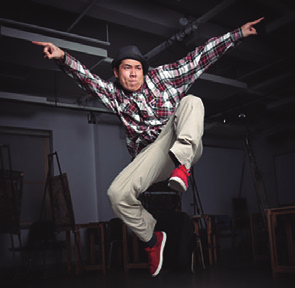
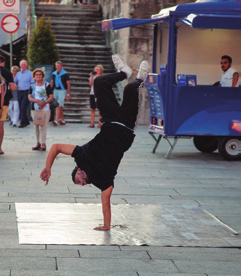
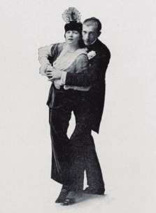

DANÇAS
Iniciando a busca
Ao trabalhar com essa unidade temática, espera-se que os alunos desenvolvam as seguintes habilidades e competências:
• (EF67EF11) Experimentar, fruir e recriar danças urbanas, identificando seus elementos constitutivos (ritmo, espaço, gestos).
• (EF67EF12) Planejar e utilizar estratégias para aprender elementos constitutivos das danças urbanas.
• (EF67EF13) Diferenciar as danças urbanas das demais manifestações da dança, valorizando e respeitando os sentidos e significados atribuídos a eles por diferentes grupos sociais.
• Competências específicas: 7, 8, 10
• Competências gerais: 4, 9, 10
• Competências de linguagens: 1, 3, 5
A dança é a manifestação da cultura corporal de movimento responsável por tratar o corpo e suas expressões artísticas, estéticas, sensuais, criativas e técnicas, que se concretizam em diferentes práticas, como nas danças típicas (nacionais e regionais), danças folclóricas, danças de rua, danças clássicas, entre outras.
Saraiva (2005, p. 114-133) afirma que a dança pode se constituir numa rica experiência corporal, a qual possibilita compreender o contexto em que estamos inseridos. É a partir das experiências vividas na escola que temos a oportunidade de questionar e intervir, podendo superar os modelos preestabelecidos, ampliando a sensibilidade no modo de perceber o mundo.


58
EDUCAÇÃO FÍSICA
É importante que os alunos tenham a oportunidade de vivenciar diferentes estilos de dança, em que você poderá propor a vivência de uma dança mais próxima ao cotidiano do aluno ( funk, rap, danças da região em que moram, entre outras), e depois realizar outra dança de acesso mais restrito (dança de salão, danças clássicas, entre outras), a fim de discutir como se constituíram historicamente, suas principais características, vertentes e influências que sofrem pela sociedade em geral, além de discutir as diferenças entre elas. Para inseri-los nesse contexto, faça questionamentos: Que tipos de danças vocês conhecem? Que ritmo ou estilo de música essas danças utilizam? Como são os passos para a elaboração dessas danças? Qual o espaço mais adequado para explorar esse tipo de dança? Pensem nos vários tipos de danças que existem (danças típicas, danças folclóricas, danças de rua, danças clássicas, entre outras), quais as principais diferenças entre elas?
Na Educação Física, a dança contribui para desenvolver nos alunos a sensibilidade, a expressão corporal e a expressão livre dos pensamentos. Além disso, leva-os a refletir sobre a realidade que os cerca, contestando o senso comum.
Clique para mostrar a sugestão
Conheça os passos básicos das danças urbanas
Ministério da Saúde.
O professor Henrique Bianchini ensina movimentos de perna para quem quer começar a praticar dança de rua, para mostrar aos seus alunos como praticar as danças urbanas. Disponível em: https://saudebrasil.saude.gov.br/eu-quero-me-exercitar-mais/videos/conheca-os-passos-basicos-das-dancas-urbanas Acesso em: 28 abr. 2022.
Corpo em ação
Danças urbanas
O termo Danças urbanas foi usado pela primeira vez para descrever as danças em um contexto urbano, ou seja, aquelas que originalmente se iniciaram nas ruas e guetos, principalmente nos Estados Unidos. É também chamada de dança de rua ou street dance.
A dança de rua é uma modalidade de dança que teve sua origem nas classes mais humildes da sociedade, as quais buscavam na música e na dança uma forma de expressão de sua realidade, recebendo influências de todos os lados: da televisão, de outros estilos de dança, de outros povos e da mistura cultural.
A dança de rua pode ser dividida em alguns estilos devido a diferentes características e estilo musical que a acompanha. O objetivo, ao se trabalhar com danças urbanas, é promover aos alunos um conhecimento a respeito das práticas corporais. Diante disso, é importante efloor
caracterizar e identificar alguns tipos de danças urbanas:
• Locking - dança inventada pelo dançarino de rua Don Campbell no final dos anos 1960, e foi pioneiro de seu grupo de dança, The Lockers.
• Wacking - dança também conhecida como punking, originada em Los Angeles, no início dos anos 1970. Apresenta movimentos complexos e giratórios, que são combinados com movimentos rápidos, precisos e estilísticos, inspirados nos filmes da Época do Ouro.
 Locking, 2014. - Matt Sirois / Dancefloor
59
EDUCAÇÃO FÍSICA
 Dança popping, 2014. - Eduardo de São Paulo / wikimedia.commons
Dança popping, 2014. - Eduardo de São Paulo / wikimedia.commons
Dança krumping, 2015. - S.I / dz2a
Dança freestyle, 2014. - twin-loc / Flickr
• Uprocking - é uma dança de rua agressiva, feita com um parceiro. Por consistir em movimentos vigorosos e determinados do braço, o uprocking às vezes lembra mais uma briga de rua do que uma dança de rua.
• Popping - originou-se na costa oeste da América na década de 1970, graças a um dançarino chamado Boogaloo Sam, que se inspirou para desenvolver seus próprios estilos de dança depois de ver The Lockers na TV. Popping tem o seu nome derivado do modo como o bailarino se contrai ou atinge os seus músculos ao ritmo da música para criar um efeito instantâneo ou repuxante.
• Boogaloo -também criado por Boogaloo Sam, ao observar o andar de um idoso pela rua e seu movimento. Caracteriza-se por movimentos circulares do quadril.
O filme Street Dance, 2010, é para a faixa etária de 14 anos. Se achar oportuno, selecione algumas cenas de dança para que os alunos vejam os movimentos realizados.
• Krumping − é uma dança urbana caracterizada pelo seu ritmo, estilo energético e movimentos faciais exagerados e altamente agressivos. Formada como uma maneira de escapar da violência nas ruas da vida de gangues, ela é ensinada e praticada em grupos muito unidos, chamados de famílias. Originouse na comunidade afro-americana do centro-sul de Los Angeles, no início dos anos 1990, como uma fusão de palhaços, teatro físico, influências locais e latinas, e se assemelha a uma versão de contato rápido do breakdance.
• Freestyle (estilo livre) −originado em meados de 1980, tal nome se deve ao fato de esse estilo de dança ser baseado em toda a forma street dance. Trata-se da modalidade mais frequente na mídia hoje, em videoclipes de música rap, R&B e pop. Não é dançada somente no acento rítmico da batida, mas também nas convenções vocais e instrumentais da música. O dançarino passa a fazer a interpretação pessoal da música – uma forma de improvisação e autoexpressão.
• House Dance − Uma das formas mais recentes de dança de rua, a House Dance originou-se na era pós-disco em clubes de Nova Iorque e Chicago. O estilo de dança é fortemente social, com ênfase no freestyle e na música tocada pelo DJ.
60
EDUCAÇÃO FÍSICA
• Funk − A música funk evoluiu em meados da década de 1960, nos Estados Unidos. Foi quando James Brown misturou o soul, o jazz e R&B, que resultou num novo ritmo musical distinto, liderado pela base elétrica e pela bateria.
• Breaking − começou nas esquinas e nas festas no Brooklyn e Bronx, quando os dançarinos faziam sua própria música de hip-hop durante o intervalo instrumental de uma música. Os quatro componentes característicos toprock, downrock, freezes e power moves cresceram a partir da adaptação de movimentos de salsa, merengue e os populares filmes de kung fu da época.
Cada uma dessas formas da dança de rua se difere pela maneira com que a dança é manifestada, isto é, com os tipos de movimentos que são executados.
Você pode apresentar alguns vídeos aos alunos, como os sugeridos a seguir. Locking https://tinyurl.com/y8u2tr3o Batalha de locking https://tinyurl.com/yaty5nh6 Popping https://tinyurl.com/y8k5otkh Acesso em: 29 abr. 2022.
O hip-hop
O hip-hop é uma cultura que consiste em subculturas ou subgrupos, baseada na criatividade.
São quatro elementos do hip-hop:
 Rap Microphone Hip-Hop Concert Music, 2017.
Rap Microphone Hip-Hop Concert Music, 2017.
• O rap (composto por um MC), apresenta ritmo e poesia em forma de expressão verbal. O rap constitui-se por uma fala ritmada e rimada com expressões que remetem, muitas vezes, à realidade das pessoas.
 DJ, 2017.
DJ, 2017.
• Os DJs, artistas e técnicos que misturam músicas diferentes para serem ouvidas e/ ou dançadas, usando suportes como vinil, CD ou arquivos digitais sonoros para tocar. Manejam os aparelhos de mixagem, com o intuito de produzir novas músicas e sons.
 B. boy, 2017.
• A dança, chamada de breakdance. O b. boy é um dançarino que se expressa utilizando o estilo do breakdance, juntamente com as batidas da música ( rap) para compor sua dança, representando a expressão corporal.
Sugestão de leiturA
Clique para mostrar a sugestão
Kaseone e Mc Who Kaseone e Raul Dias são os autores de
Hip-Hop: cultura de rua, livro que retrata a origem da cultura hip-hop em São Paulo, Rio de Janeiro, Belo Horizonte, Brasília, e Goiânia. Por meio de fotos e material feito pela imprensa e revistas da época, podemos ver o modo como surgiu e seus verdadeiros percus- sores. Mostram em imagens o combate do rap contra a fome e em diversas outras situações. Editora: LiteraRua. 2011.61
EDUCAÇÃO FÍSICA
Sugestão de vídeoS
Clique para mostrar a sugestão
Para que os alunos
tenham um pouco
de contado com a
dança, possibilite que
eles assistam a vídeos
de apresentações
de break. Seguem
algumas sugestões.
Conheça a dan-
ça Break
https://www.
youtube.com/
watch?v=uDEFEr6au04
Dança de Rua |
Danças Urbanas | Magic Break Dance– divirtam-se
https://www.youtube.com/
watch?v=lyT2-1DOtdo
Break no asfalto
(Dança de rua)
mento para o início da dança.
https://www.youtu-
be.com/watch?v=-
gx3B7DH7zKA
• O grafiteiro. Os grafites eram demarcações de territórios entre gangues rivais, por meio de assinaturas que, aos poucos, transformaram-se em forma de expressão artística. São artes plásticas, desenhos coloridos feitos nos muros espalhados pela cidade.
Grafiteiro, 2014.
O breaking inclui quatro formas básicas de dançar:
• Toprock apresenta todos os movimentos realizados em pé. O dançarino deve ser coordenado, flexível, ter estilo e ritmo. É o aquecimento para o início da dança.

62
EDUCAÇÃO FÍSICA
Downrock ou footwork inclui qualquer movimento
envolvendo os
pés e as mãos dos dançarinos executado simultaneamente no chão.
O dançarino usa a velocidade e o controle realizando movimentos
extravagantes.

Power moves incluem movimentos acrobáticos complexos e impressionantes. São ações que requerem força física para serem executadas.
Freeze é um movimento que o dançarino geralmente usa para finalizar a dança. O dançarino suspende-se, finalizando a dança com um movimento em uma pose elegante e impressionante.
63
EDUCAÇÃO FÍSICA
 One-handed freeze.
One-handed freeze.
Algumas danças como locking, wacking, punking, vogue, uprock, popping, waving, entre outras, foram incorporadas à cultura hip-hop.
As danças de breakdance podem ser praticadas em qualquer espaço físico. Os dançarinos marcam um horário para se encontrarem e “batalharem”. Essas batalhas são apenas disputas de dança, em que um bailarino de cada vez entra na roda para mostrar o que sabe fazer, sempre ao som do rap. O objetivo é expressar a cultura hip-hop da melhor maneira possível.
No Brasil, o hip-hop surgiu na década de 1980, chegando primeiro em São Paulo. Um dos principais grupos de rap e hip-hop brasileiros nasceu no final dessa década, na periferia de São Paulo. Os Racionais MC's surgiram com um discurso contra a opressão às populações marginalizadas nas grandes cidades.
Racionais MC's. São Paulo, SP, 2016.
As manifestações são modificadas pela cultura. Enquanto, nos Estados Unidos, África Bambaata aproveita-se do gosto pela arte, música e dança para organizar a comunidade com o fim de combater a violência, diminuir as disputas entre as gangues, no Brasil o hip-hop cresce e se amplia como cultura e arte carregada de sentido, despertando um espírito crítico acerca da realidade vivenciada pelo jovem periférico.
64
EDUCAÇÃO FÍSICA
Maxixe
O maxixe entrou para história como a primeira dança urbana brasileira.
De acordo com Diniz (2006),
a pioneira dança urbana surgida no Brasil, o maxixe é oriundo da Cidade Nova, bairro erguido por volta de 1860 com o aterro da região panta-nosa em torno do Canal do Mangue, no Rio de Janeiro, cuja principal característica era a forte presença de afrodescendentes. A planta maxixe batizou essa nova dança que, por assim dizer, também brotava nos quatro cantos da cidade.
Até o advento do samba, o maxixe representou o gênero dançante mais importante do Rio de Janeiro. O maxixe se formou musical e coreográfica-mente pela fusão e adaptação de elementos provenientes de várias fontes, como da habanera e da polca europeias com o africano lundu.
Também conhecido como “tango brasileiro”, é uma dança sensual, com movimentos ousados. A principal característica do maxixe é o movimento circular dos quadris durante a dança. Observe a seguir alguns passos do maxixe.

Clique para mostrar o texto
O passo skating (antes da inclinação): o homem deve sempre se lembrar de colocar sua perna direita na frente da mulher ao mover-se para frente.

Clique para mostrar o texto
O two-step para trás: saindo do passo skating, o homem coloca suas mãos sobre as mãos da dama e a guia para o two-step.

Clique para mostrar o texto
O giro: a mulher gira para a direita, encarando seu parceiro.

Clique para mostrar o texto
Após o giro: as mãos vão para frente naturalmente, palmas unidas.
Imagens: Acervo Biblioteca Pública de Nova York
Vernon e Irene Castle dedicaram um capítulo de seu famoso manual de dança de 1914, Modern Dancing, ao maxixe, também descrito como o tango brasileiro. As imagens mostram adaptações do maxixe à cultura estadunidense.
O maxixe começa a perder seu espaço a partir de 1930, mas foi de grande importância para a formação cultural carioca, tornando-se referência para outros estilos surgidos, como o samba, que teve alguns dos elementos do maxixe incorporados em sua origem.
Frevo
O Brasil tem várias formas de vivenciar o Carnaval. Os carnavais no Norte e Nordeste sempre tiveram características próprias. O frevo é uma das principais manifestações culturais do estado de Pernambuco, principalmente nesse período.
65 EDUCAÇÃO FÍSICA

Lúcia Gaspar / Bibliotecária da Fundação Joaquim Nabuco
Frevo. Olinda, PE, 2016
O frevo foi reconhecido como Patrimônio
Imaterial da Humanidade pela Organização
das Nações Unidas para a Educação, a Ciência
e a Cultura (Unesco). Nasceu na cidade do
Recife, no fim do século XIX, e foi formado a
partir de uma mistura de sons das bandas mili-
tares e dos capoeiristas, mas também recebeu
influência da polca e do maxixe.
Os dançarinos são conhecidos como pas-
sistas, que, com suas roupas coloridas, agitam
o guarda-chuva, elemento fundamental do
frevo.
Os passos básicos do frevo são: dobradiça, tesoura, locomotiva, ferrolho, parafuso, pontilhado, ponta de pé e calcanhar, abanando, caindo-
-nas-molas, tramela e pernada. Conheça alguns deles:
Movimento parafuso

Movimento tesoura

Movimento ferrolho
66
EDUCAÇÃO FÍSICA
Leitura complementar
A dança como inclusão social
A dança é fundamental na vida do ser humano, tanto para sua formação artística quanto para sua integração social. Ela é importante para o desenvolvimento tátil, visual, auditivo, afetivo, cognitivo e motor. A dança é um meio de promover a socialização, o respeito, o direito à individualidade, limites, entre outros, e por meio dela ainda é possível promover a inclusão social.


Cada prática corporal relacionada à dança, vista pelos alunos, permite que eles vivenciem também um pouco da cultura. Embora tenham diferentes origens, as danças, ao serem introduzidas em outros países, acabam se adaptando à cultura local e também sofrendo modificações. Você pode solicitar uma pesquisa aos alunos para que eles diferenciem o hip-hop dos Estados Unidos do hip-hop brasileiro, por exemplo, com o objetivo de que percebam as mudanças ocorridas.
É importante também que os alunos compreendam as influências e agregações que muitas vezes acontecem entre a dança clássica e a dança de rua e consigam perceber, mesmo que sutilmente, a diferença entre cada uma, e é fundamental que isso seja trabalhado e discutido em sala de aula.
Eles irão, a seguir, praticar e criar a sua própria dança urbana.
67
EDUCAÇÃO FÍSICA


Organizando a atividade
Assista ao vídeo que
Para realizar qualquer estilo de dança urbana, é preciso controle cor-mostra a inclusão
por meio da dança.
poral, coordenação motora, ritmo, espaço e música.
https://tinyurl.com/
yd3thhok. Acesso
Atividade prática 1: Criando uma dança urbana
em: 29 abr. 2022.
Materiais necessários: espaço livre, aparelho de som e músicas.
Número de aulas estimado: 3
Objetivo: experimentar e fruir danças urbanas, identificando os gestos e o ritmo característicos de cada estilo, bem como acatar e respeitar as ideias dos colegas.
Organize a turma em grupos e selecione uma música para cada um.
Os alunos podem criar movimentos com base nos conteúdos aprendidos anteriormente sobre danças urbanas ou pesquisarem outros. Permita que ensaiem para verificarem se os passos criados estão em sincronia com a música escolhida. Realize as apresentações para a escola e, se possível, convide a comunidade.
Observe a seguir outros movimentos do breaking e do frevo para ajudar os alunos na criação da dança:
tosan
onfim dos S
gio Bér
ões: Saç
Ilustr
Movimento tramela do frevo.
68
EDUCAÇÃO FÍSICA

Atividade prática 2: Vamos batalhar?
Materiais necessários: espaço livre, aparelho de som, músicas de rap.
Número de aulas estimado: 3
Objetivo: experimentar e fruir danças urbanas, identificando os gestos e o ritmo característicos de cada estilo, bem como acatar e respeitar as ideias dos colegas.
Escolha um lugar amplo e apropriado para a prática da dança. Faça uma roda com todos os alunos. Selecione algumas músicas previamente, que deverão estar de acordo com a cultura hip-hop. Para iniciar a atividade, os alunos podem escolher batalharem individualmente ou em grupo e irem ao centro
r
lick
da roda. Cada aluno ou
grupo deverá criar alguns
elles / Feir
movimentos com o mes-
ilet M
mo ritmo da música. Em
João M
seguida, outro aluno ou
grupo entra na roda para
“batalhar”, criando no-
vos movimentos.
Depois que todos
os alunos participarem,
discuta sobre a vivência
da dança e da batalha,
solicitando a opinião de-
les sobre essa prática
Batalha de hip-hop. Salvador, BA, 2013.
corporal.
AvaliandO
Neste momento, fim do trabalho com a unidade temática danças, solicite um trabalho em equipes, no qual os alunos deverão produzir um vídeo (pode ser no celular) explicando o que são danças urbanas, constan-do um ou mais colegas realizando o passo característico de cada dança e a filmagem de uma coreografia de dança urbana, elaborada pelo grupo.
Projete os vídeos para a turma toda e solicite que os próprios colegas façam uma avaliação de cada grupo.
Você deverá analisar o envolvimento dos alunos na produção dos vídeos, se compreenderam o que são danças urbanas, se recriaram movimentos dentro do ritmo escolhido e usaram o espaço disponível ao elaborar a coreografia, e também se souberam avaliar os colegas com respeito e responsabilidade.
69
EDUCAÇÃO FÍSICA